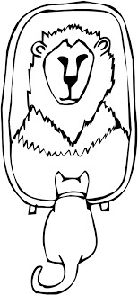

Grandiose Delusion
Grandiose delusion is a false belief about superiority, purpose, abilities, or identity. The person with grandiose delusion may continue to believe in their delusion theory in spite of contradictory evidence.
Causes of Grandiose Delusion
- Mental Health Disorders:
Bipolar Disorder arises the manic thinking, which may eventually lead to grandiose thinking, where individuals think they are invincible and capable to do something extraordinary. -
Environmental Issues:
Delusions can arise as a result of traumatic or abusive childhood experiences. Delusions can also arise as a result of everyday stress. -
Social Isolation:
Disordered thinking without proper communication with others could make the symptoms worse. -
Substance Abuse:
Delusions may happen as the consequence of drug or alcohol abuse. While alcohol impairs one's capacity for clear and logical thought, certain drugs can alter brain chemistry and result in delusions. -
Defense Mechanism:
According to some theories, Grandiose delusions can be used as a defense mechanism because of low self-esteem or inadequacy. This means that the person may use grandiose delusions to protect themselves from feelings of worthlessness or failure. - false belief that one possesses magical skills
- false belief that one is a religious leader
- false belief that one is famous or occupies a high position in society
- false belief that one cannot be harmed by disease or injury
- false inflated belief in one’s own importance